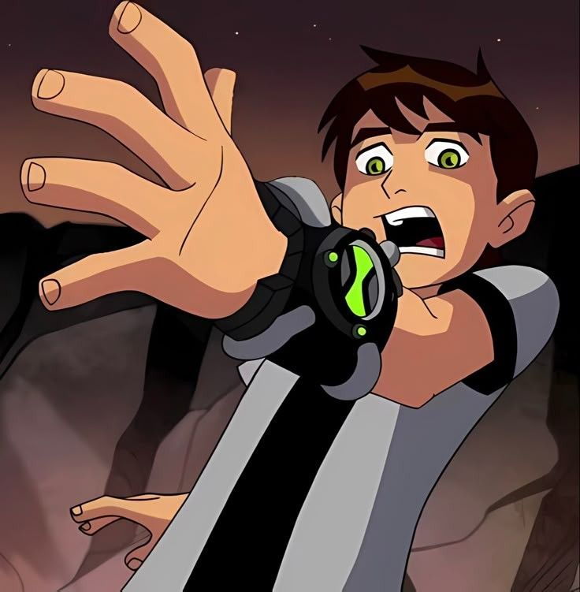

Season 1, Episode 1 — Series Premiere
And then there were 10 එපිසෝඩ් එක ශෝට් ඇන් ස්වීට් විදිහට රිවීල් කරන්න තමයි යන්නෙ , හරි යමු කතාවට ! 🫣

මේ කතාංගය මුලින්ම විකාශය වූ දිනය: 2005 දෙසැම්බර් 27
Ben 10 Classic කතා මාලාවේ පළවෙනි කතාංගය වෙන්නෙ මේක
මේ එපිය ලියලා තියෙන්නෙ Thomas Pugsley විසින්
අධ්යයක්ෂණය කරලා තියෙන්නෙ Scooter Tidwell විසින්
ඇනිමේශන් පැත්තෙන් වැඩ කරලා තියෙන්නෙ Sunmin Image Pictures
ඉතිං මේ පළවෙනි එපිසෝඩ් එකේදිම අපිට පෙන්නලා තියෙනවා බෙන්ගෙ ආවේගශීලි බව ඉක්මන් තීරණ ගන්න විදිහ සහ ග්වේන්ගෙ බුද්ධිය සහ ඒ ඒ තත්වයන් පාලනය කරන විදිහ ඒ වගේම ග්රෑන්ඩ්පා මැක්ස්ගෙ සැඟවුණු අතීතය පිළිබඳ ! 🫣
ඔම්නිට්රික්ස් පෝඩ් එක වැටෙන්නෙ බෙන් කැම්ප් කරන තැනමනෙ ඒ කියන්නෙ බෙන් වගකීම් ගන්න සූදානම් නැති වුනත් එයාට වගකීම ලැබෙනවා , මේක අපි මුලින් දැනගෙන හිටියෙ නැති වුනත් ඔම්නිවර්ස් එක බලපුවාම තේරෙනවා මේ හින්ට් එක ! 💚🫣
ඔම්නිට්රික්ස් එක හම්බෙලා බෙන් පළවෙනියටම Transformation වෙන්නෙ Heatblast විදිහට මේ මොමන්ට් එකෙන්ම පෙන්නනවා බලය තිබ්බට බෙන්ට පාලනයක් නැ කියලා !
Heatblast විදිහට බෙන්ව මුණ ගැහුනට පස්සෙ ග්වේන් බය වුනත් මේ එපියෙම අනිත් ජීවින් විදිහට බෙන් Transformation වෙද්දි ග්වේන් බය වෙන්නෙ නැ මේකෙන් ග්වේන්ගෙ බුද්ධිමත් බව අවබෝධය වගේ දේවල් අපිට පෙන්නනවා වගේම පස්සෙ මැජික් වගේ දේවල් ඉගෙනගන්න පුළුවන් හැකියාව තියෙනවා කියලා මෙතනින් හින්ට් කරනවා !
බෙන් Heatblast විදිහට Transformation වෙලා ඉන්නවා දැක්කම ග්රෑන්ඩ්පා මැක්ස් බය වෙන්නෙ නැ , මේක කතාවෙ පසුවට අපිට කියන Plumber කතාවට හොඳම හින්ට් එකක් , හැබැයි ග්රෑන්ඩ්පා මැක්ස් මේ වෙනකන් Omnitrix ගැන මෙලොව දෙයක් දන්නෙ නම් නැ ! 🫠
And Then There Were 10 කියන නම මේ එපියට දාපු විදිහම මම වෙනම පෝස්ට් එකක් ගෙනාව මතක ඇතිනෙ , ඉතිං Omnitrix එකෙ මුල් Alien ලා 10 දෙනා ගැන තමයි මේකෙ හින්ට් කරලා තියෙන්නෙ ඒ වගේම බෙන්ගෙ සාමාන්යය ජීවිතය මෙතනින් අවසන් උනා කියන අර්ථය දීලා තියෙනවා !
බෙන්ට ඔරලෝසුව ගැන ලොකුවටම ප්රශ්න නැ , කොහෙන් ආවද ? ඒ වගේම සෙල්ලක්කාර කමෙන් තමයි ඒ වෙලාවෙත් ඉන්නෙ , මේක ළමයෙක්ගෙ හැසිරීම අපිට හොඳින් දනවන්න උත්සහ කරලා තියෙනවා !
අවසාන වශයෙන් මේ එපිය හදලා තියෙන්නෙ , සියලුම වගේ තොරතුරු පසුවට දාලා මේ නිසා මේක බලන්න තියෙන උනන්දුව වැඩි වෙනවා !
මේක ඇත්තටම ලෝක ප්රසිද්ධ අභිරහස් කතා රැජින, Agatha Christie (අගතා ක්රිස්ටි) විසින් රචිත ලොව වැඩියෙන්ම අලෙවි වූ අභිරහස් නවකතාවකට කළ අපූරු Reference එකක් 🫣💁♂️
පොතේ නම තමයි "And Then There Were None" (අවසානයේ එහි කිසිවෙකුත් ඉතිරි නොවීය).
📺 එපිසෝඩ් එකේ නම: "And Then There Were 10" (අවසානයේ එහි දස දෙනෙක් විය).
පොතේ කතාවේ හැටියට අවසානයේ කිසිවෙක් ඉතිරි වෙන්නේ නැහැ. ඒත් බෙන්ට ඔම්නිට්රික්ස් එක හරහා පිටසක්වල ජීවීන් 10 දෙනෙකුගේ බලය ලැබෙන නිසා, පොතේ නමේ "None" යන වචනය වෙනුවට "10" යොදා ඉතා නිර්මාණශීලීව මේ නම දාලා තියෙනවා ! 💚